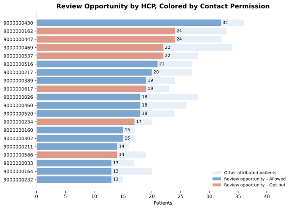
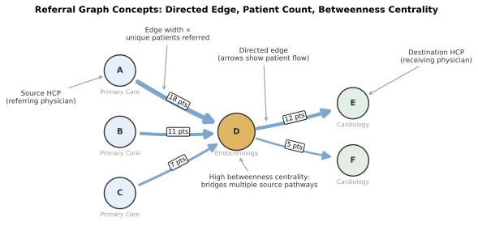
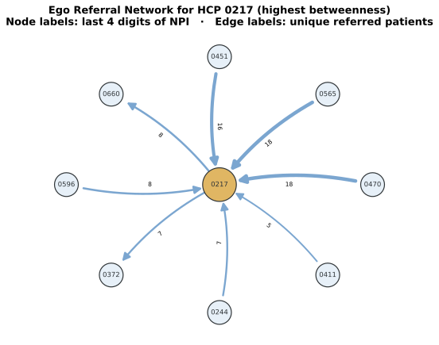
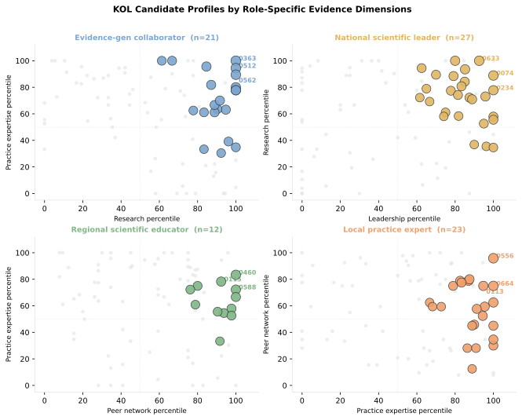
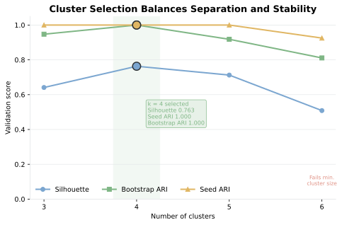
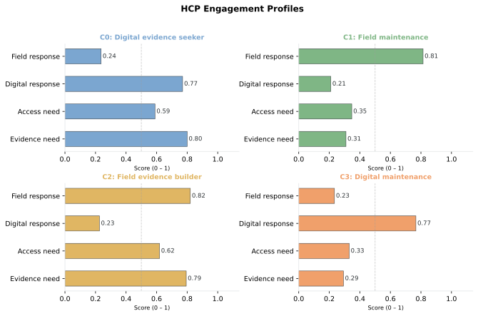

Chapter 6 Walkthrough: HCP Targeting
This executed notebook builds the Chapter 6 artifacts at the December 31, 2024 cutoff. Run ch06_hcp/scripts/generate_ch06_data.py before rebuilding the notebook.
from pathlib import Path
import importlib
import sys
import pandas as pd
ROOT = Path.cwd().resolve()
while not (ROOT / "ch06_hcp").exists():
if ROOT.parent == ROOT:
raise FileNotFoundError("Run this notebook inside the repository.")
ROOT = ROOT.parent
SCRIPT_DIR = ROOT / "ch06_hcp" / "scripts"
sys.path.insert(0, str(SCRIPT_DIR))
analysis_module = importlib.import_module("run_analysis")
targeting = importlib.import_module("targeting")
referral = importlib.import_module("referral_network")
segmentation = importlib.import_module("segmentation")
results = analysis_module.run_analysis(ROOT)
headline = pd.Series({
"Journey patients": results["attribution_comparison"].patient_id.nunique(),
"Eligible-roster patients": results["patient_hcp"].patient_id.nunique(),
"Eligible HCPs": results["hcp_features"].npi.nunique(),
})
print(headline.to_frame("count"))
count
Journey patients 6393
Eligible-roster patients 1556
Eligible HCPs 158
The eligible roster covers 1,556 patients and 158 HCPs. The remaining journey patients stay outside this field-planning artifact.
1. Attribution sensitivity
agreement = results["attribution_summary"].copy()
agreement["agreement_rate"] = agreement["agreement_rate"].map(
lambda value: f"{value:.1%}"
)
print(agreement)
print(
results["attribution_comparison"].query(
"patient_id == 'PAT02034'"
).reset_index(drop=True)
)
comparison patients_with_both same_hcp agreement_rate
0 Index vs plurality 6393 4399 68.8%
1 Index vs latest 6393 4088 63.9%
2 All 3 rules 6393 4005 62.6%
patient_id index_npi plurality_npi latest_npi all_rules_agree
0 PAT02034 9000000280 9000000280 9000000280 True
All 3 attribution rules agree for 63.4% of patients. PAT02034 remains assigned to HCP0280 under every rule.
2. HCP evidence and concentration
columns = [
"npi", "cohort_patients", "treated_patients", "roventra_starts",
"review_opportunity", "contact_permission_status",
]
print(
results["hcp_features"].sort_values(
["cohort_patients", "npi"], ascending=[False, True]
)[columns].head(10).reset_index(drop=True)
)
deciles = results["decile_summary"].copy()
deciles["cumulative_hcp_share"] = deciles["cumulative_hcp_share"].map(
lambda value: f"{value:.0%}"
)
deciles["cumulative_opportunity_share"] = deciles[
"cumulative_opportunity_share"
].map(lambda value: f"{value:.1%}")
print(deciles[[
"opportunity_decile", "hcps", "review_opportunity",
"cumulative_hcp_share", "cumulative_opportunity_share",
]].head())
npi cohort_patients treated_patients roventra_starts \
0 9000000430 36 9 2
1 9000000469 34 10 9
2 9000000162 33 13 8
3 9000000447 32 12 5
4 9000000026 28 11 8
5 9000000537 28 6 2
6 9000000217 27 8 4
7 9000000516 27 9 6
8 9000000460 26 10 7
9 9000000389 24 8 4
review_opportunity contact_permission_status
0 32 Allowed
1 22 Opt-out
2 24 Opt-out
3 24 Opt-out
4 18 Allowed
5 22 Opt-out
6 20 Allowed
7 21 Allowed
8 18 Allowed
9 19 Allowed
opportunity_decile hcps review_opportunity cumulative_hcp_share \
0 1 12 216 11%
1 2 11 123 21%
2 3 11 100 30%
3 4 11 84 40%
4 5 11 68 50%
cumulative_opportunity_share
0 26.6%
1 41.7%
2 54.0%
3 64.3%
4 72.7%
The highest-volume rows include opt-outs. The first 30% of HCPs capture 55.2% of review opportunity.

Figure 6.1. Review opportunity ranked highest to lowest, colored by contact permission. An HCP near the top with a red bar holds substantial opportunity but cannot be worked through the field channel in this cycle. Synthetic data.

Figure 6.2. The curve starts at (0%, 0%) and rises steeply. The top 30% of contactable HCPs by review opportunity account for 54% of total contactable opportunity. The dashed diagonal shows what equal distribution would look like. Synthetic data.
3. Referral pathways
print(results["referral_edges"][[
"source_npi", "destination_npi", "unique_patients",
"median_transition_days",
]].head(10))
print(results["referral_metrics"][[
"npi", "specialty", "betweenness_centrality",
"pathway_patient_volume", "pathway_breadth",
]].head(15))
source_npi destination_npi unique_patients median_transition_days
0 9000000578 9000000258 22 25.0
1 9000000417 9000000164 20 40.0
2 9000000460 9000000567 20 24.5
3 9000000033 9000000302 19 32.0
4 9000000265 9000000409 19 27.0
5 9000000520 9000000127 19 29.0
6 9000000020 9000000409 18 37.0
7 9000000128 9000000567 18 31.5
8 9000000470 9000000217 18 29.0
9 9000000565 9000000217 18 32.5
npi specialty betweenness_centrality pathway_patient_volume \
0 9000000217 Endocrinology 0.000626 87
1 9000000567 Endocrinology 0.000521 80
2 9000000127 Endocrinology 0.000730 70
3 9000000170 Endocrinology 0.000834 69
4 9000000204 Endocrinology 0.000521 64
5 9000000215 Endocrinology 0.000313 64
6 9000000207 Endocrinology 0.000417 62
7 9000000258 Endocrinology 0.000417 61
8 9000000550 Endocrinology 0.000469 59
9 9000000636 Endocrinology 0.000313 58
10 9000000115 Endocrinology 0.000573 56
11 9000000409 Endocrinology 0.000209 51
12 9000000218 Endocrinology 0.000417 50
13 9000000363 Endocrinology 0.000521 50
14 9000000174 Endocrinology 0.000469 46
pathway_breadth
0 8
1 7
2 9
3 10
4 8
5 8
6 6
7 6
8 7
9 8
10 8
11 5
12 7
13 7
14 7
The referral output shows the top pathway HCPs by patient volume and betweenness centrality.

Figure 6.3. Conceptual illustration of the referral graph structure used in this chapter. Nodes A-C are Primary Care physicians (blue), node D is the Endocrinologist hub (gold), and nodes E-F are Cardiologists (green). Arrow width reflects patient count on each edge. Node D has the highest betweenness centrality because it bridges multiple upstream sources to downstream specialists.

Figure 6.4. The ego network shows the highest-betweenness HCP and the ten strongest referral edges connected to that physician. Patient count labels each edge. Synthetic data.
4. Scientific role evidence
candidates = results["kol_profiles"].loc[
results["kol_profiles"]["kol_candidate"]
]
print(candidates[[
"npi", "specialty_1", "proposed_role",
"role_fit_score", "evidence_confidence",
]].head(8).reset_index(drop=True))
print(results["kol_validation"])
print(results["kol_transparency_review"][[
"npi", "total_payment_amount", "payment_records",
"transparency_use",
]].head())
npi specialty_1 proposed_role \
0 9000000105 Cardiology National scientific leader
1 9000000206 Endocrinology Evidence-generation collaborator
2 9000000211 Endocrinology Evidence-generation collaborator
3 9000000237 Primary Care Evidence-generation collaborator
4 9000000363 Endocrinology Evidence-generation collaborator
5 9000000441 Primary Care Evidence-generation collaborator
6 9000000512 Cardiology Evidence-generation collaborator
7 9000000562 Cardiology Evidence-generation collaborator
role_fit_score evidence_confidence
0 89.0 High
1 77.2 High
2 93.0 High
3 92.2 High
4 100.0 High
5 92.2 High
6 98.1 High
7 96.3 High
validation_measure value
0 KOL candidates 83.000000
1 Reviewed candidates 79.000000
2 Proposed role match rate 0.582278
3 Reviewer confirmation rate 0.639241
4 Reviewer decision kappa 0.426150
npi total_payment_amount payment_records \
0 9000000105 85575.71 7
1 9000000206 0.00 0
2 9000000211 0.00 0
3 9000000237 0.00 0
4 9000000363 0.00 0
transparency_use
0 Disclosure context only; excluded from scienti...
1 Disclosure context only; excluded from scienti...
2 Disclosure context only; excluded from scienti...
3 Disclosure context only; excluded from scienti...
4 Disclosure context only; excluded from scienti...
Scientific role fit and payment transparency remain separate. Medical affairs owns the role review.

Figure 6.5. Each panel focuses on one proposed role and plots the two dimensions that dominate its fit formula. Gray dots are candidates assigned to other roles. The same candidate can look strong or weak depending on which role lens is applied. Synthetic data.
5. K-means engagement profiles
evaluation = results["cluster_evaluation"].copy()
metrics = ["silhouette", "seed_stability_ari", "bootstrap_stability_ari"]
evaluation[metrics] = evaluation[metrics].round(3)
print(evaluation[[
"k", *metrics, "minimum_cluster_size",
"operational_size_pass", "selected",
]])
profiles = results["segment_profiles"].copy()
features = [
"evidence_need_score", "access_resource_score",
"digital_response_rate", "field_response_rate",
]
profiles[features] = profiles[features].round(2)
print(profiles[["segment_name", "hcp_count", *features]])
print(results["segment_policy_comparison"].set_index("segment_name").T)
k silhouette seed_stability_ari bootstrap_stability_ari \
0 3 0.641 1.000 0.947
1 4 0.763 1.000 1.000
2 5 0.713 1.000 0.918
3 6 0.509 0.925 0.811
minimum_cluster_size operational_size_pass selected
0 14 True False
1 9 True True
2 4 False False
3 4 False False
segment_name hcp_count evidence_need_score \
0 C0: Digital evidence seeker 9 0.80
1 C1: Field maintenance 14 0.31
2 C2: Field evidence builder 22 0.79
3 C3: Digital maintenance 11 0.29
access_resource_score digital_response_rate field_response_rate
0 0.59 0.77 0.24
1 0.35 0.21 0.81
2 0.62 0.23 0.82
3 0.33 0.77 0.23
segment_name C0: Digital evidence seeker C1: Field maintenance \
Access-resource need 1 0
Balanced follow-up 0 13
Digital evidence seeker 8 0
Established adopter 0 1
Field evidence builder 0 0
segment_name C2: Field evidence builder C3: Digital maintenance
Access-resource need 5 0
Balanced follow-up 0 8
Digital evidence seeker 0 0
Established adopter 0 3
Field evidence builder 17 0
The selected 4-cluster solution has silhouette 0.763, seed ARI 1.000, bootstrap ARI 1.000, and minimum cluster size 9.

Figure 6.6. k=4 achieves the best silhouette score, seed ARI, and bootstrap ARI among solutions that pass the minimum cluster-size gate. Synthetic data.

Figure 6.7. Each panel is one engagement profile. The dashed line marks 0.5 (mid-range). C0 and C2 both show high evidence-need bars but diverge on which response channel is tall; C1 and C3 both show lower evidence-need bars but split the same way on channel. Synthetic data.
6. HCP call plan
print(results["call_plan"][[
"territory", "account_id", "npi", "hcp_action",
"segment_name", "recommended_calls", "reason_code",
]])
print(results["plan_comparison"].set_index("plan").T)
territory account_id npi hcp_action segment_name \
0 T01 ACC224 9000000217 Prioritize C1: Field maintenance
1 T01 ACC056 9000000136 Prioritize C2: Field evidence builder
2 T03 ACC034 9000000273 Prioritize Not clustered
3 T04 ACC155 9000000389 Prioritize C3: Digital maintenance
4 T04 ACC219 9000000460 Maintain C2: Field evidence builder
5 T05 ACC124 9000000035 Prioritize C2: Field evidence builder
6 T06 ACC189 9000000430 Prioritize C1: Field maintenance
7 T06 ACC109 9000000164 Prioritize C0: Digital evidence seeker
8 T06 ACC005 9000000498 Prioritize C2: Field evidence builder
9 T06 ACC005 9000000051 Prioritize C2: Field evidence builder
10 T07 ACC190 9000000366 Prioritize Not clustered
recommended_calls reason_code
0 2 PRIORITIZE_REVIEW_OPPORTUNITY
1 2 PRIORITIZE_REVIEW_OPPORTUNITY
2 2 PRIORITIZE_REVIEW_OPPORTUNITY
3 2 PRIORITIZE_REVIEW_OPPORTUNITY
4 1 MAINTAIN_ESTABLISHED
5 2 PRIORITIZE_REVIEW_OPPORTUNITY
6 2 PRIORITIZE_REVIEW_OPPORTUNITY
7 2 PRIORITIZE_REVIEW_OPPORTUNITY
8 2 PRIORITIZE_REVIEW_OPPORTUNITY
9 1 PRIORITIZE_REVIEW_OPPORTUNITY
10 2 PRIORITIZE_REVIEW_OPPORTUNITY
plan Top 30 by patient volume Gated 4-week field plan
selected_hcps 30 11
contact_permitted 30 11
held_or_unknown 0 0
review_opportunity 397 143
recent_contacts 43 6
The HCP call plan contains 11 permitted HCPs and 20 recommended calls. Each row keeps site account context for routing.
8. Export the evidence package
output_dir = ROOT / "ch06_hcp" / "assets" / "generated_outputs"
analysis_module.write_outputs(results, output_dir, ROOT)
print(f"Wrote {len(results)} CSV artifacts and manifest.json")
Wrote 30 CSV artifacts and manifest.json
The package carries analysis date, source hashes, rule version, decision boundaries, and output contracts.